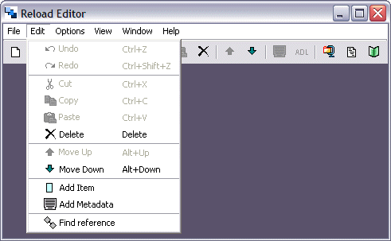

Edit Menu
The Edit menu contains all the standard edit action options you would expect to find in any piece of software, as well as some specific actions releavant to RELOAD Editor.

Undo Add Item
The Undo Add Item Menu Item (Edit, Undo Add Item or Ctrl+Z), allows the user to undo the last action.
Redo
The Redo Menu Item (Edit, Redo or Ctrl+Shift+Z), allows the user to redo the last action.
Cut
The Cut Menu Item (Edit, Cut or Ctrl+X), allows the user to cut the current selection (into the clipboard). This option works for both files and text.
Copy
The Copy Menu Item (Edit, Copy or Ctrl+C), allows the user to copy the current selection (into the clipboard). This option works for both files and text.
Paste
The Paste Menu Item (Edit, Paste or Ctrl+V), allows the user to paste the contents of the clipboard into the current position. This option works for both files and text.
Delete
The Delete Menu Item (Edit, Delete or del), allows the user to delete the current selection. This option works for both files and text.
Move Up
The Move Up Menu Item(Edit, Move Up or Alt+Up), to move the selected file UP within the CP.
Move Down
The Move Down Menu Item(Edit, Move Down or Alt+Down), to move the selected file DOWN within the CP.
In addition, some context sensitive Items appear on this menu:
Add Organization
The Add Organization Menu Item (context sensitive), allows you to add an Organization to a manifest.
Add Item
The Add Item Menu Item (context sensitive), allows you to add an Item to a given Organization.
Add Metadata
The Add Metadata Menu Item (context sensitive), allows you to add Metadata to a particular Item.
Edit SCORM
The Edit SCORM Menu Item (context sensitive), allows you to edit SCORM tags for a particular Item within a SCORM 1.2 Content Package.
Find Reference
The Find Reference Menu Item (context sensitive), allows you to find the resource used by a particular item.
Add Resource
The Add Resource Menu Item (context sensitive), allows you to add new resources to the manifest.
Add Dependency
The Add Dependency Menu Item (context sensitive), allows you to identify a resources upon which the currently selected resource is dependent.
Aggregate
The Aggregate Menu Item (context sensitive) allows you to add an existing manifest (and associated content) at the current point in the package.
Disaggregate
The Disaggregate Menu Item (context sensitive) alows you to unbundle the currently selected manifest (and associated content) from the current package.